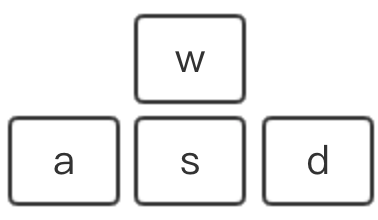
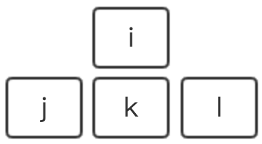
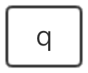
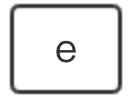
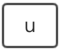
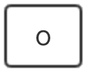

Move the camera:
Camera direction:
switch for head light:
switch for world light:
switch for shading mode:
switch for lighting mode:
Shading Mode: Phong shading
Lighting Mode: Bilnn-Phong lighting
| Position of world light: | X: | Y: | Z: |